2. Insumos - Mantenedor Packings

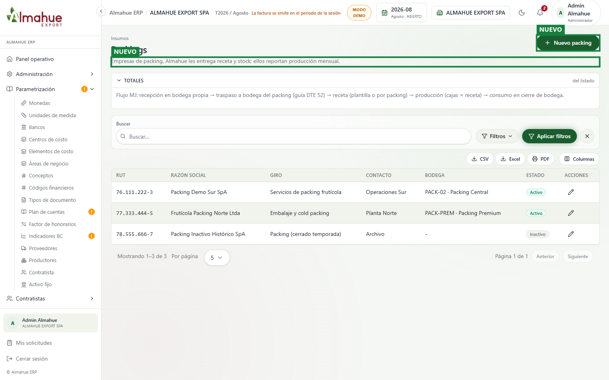
Antes el packing vivía solo como mock en Órdenes de aplicación. Ahora hay menú Insumos › Packings (RUT, razón social, bodega al alta). No se pulsó Guardar ni Nuevo packing en la foto.
ALMAHUE EXPORT SPA, Modo Demo periodo 2026-08, capturas 1536x960. Lote local: organigrama PDF MJ (card cerrable), mantenedor Packings + receta/producción API, asiento Quién/cuándo, Balance 8 desde 1 ene, ER solo periodo, cierre con CONSUMO_PACKING, notas embarcador/Asoex. El recuadro verde NUEVO está solo en la captura. Ver también recorrido.html.
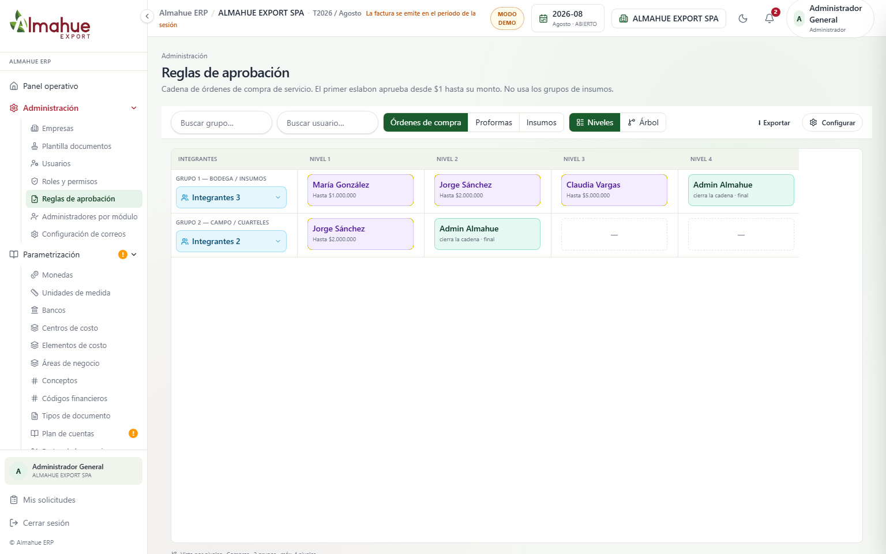
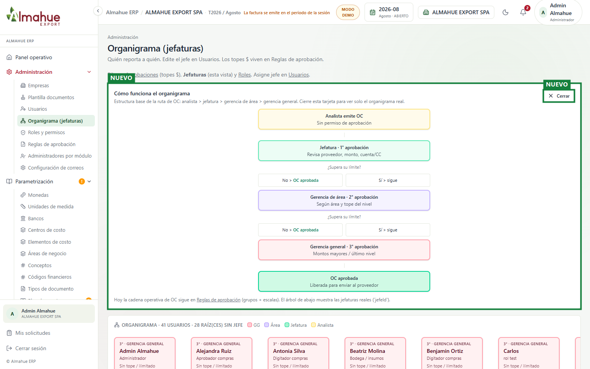
Antes no había pantalla de organigrama (referencia: Reglas de aprobación). Ahora Admin › Organigrama muestra el árbol por jefeId y la estructura base del flujo OC dentro de «Cómo funciona el organigrama», con Cerrar. Sin nombres de participantes en el diagrama. No se editó ningún usuario.

Antes el packing vivía solo como mock en Órdenes de aplicación. Ahora hay menú Insumos › Packings (RUT, razón social, bodega al alta). No se pulsó Guardar ni Nuevo packing en la foto.


Recetas y producción pasan a API/BD (packing opcional en receta; packing obligatorio al declarar producción). No se importó Excel ni se confirmó producción.
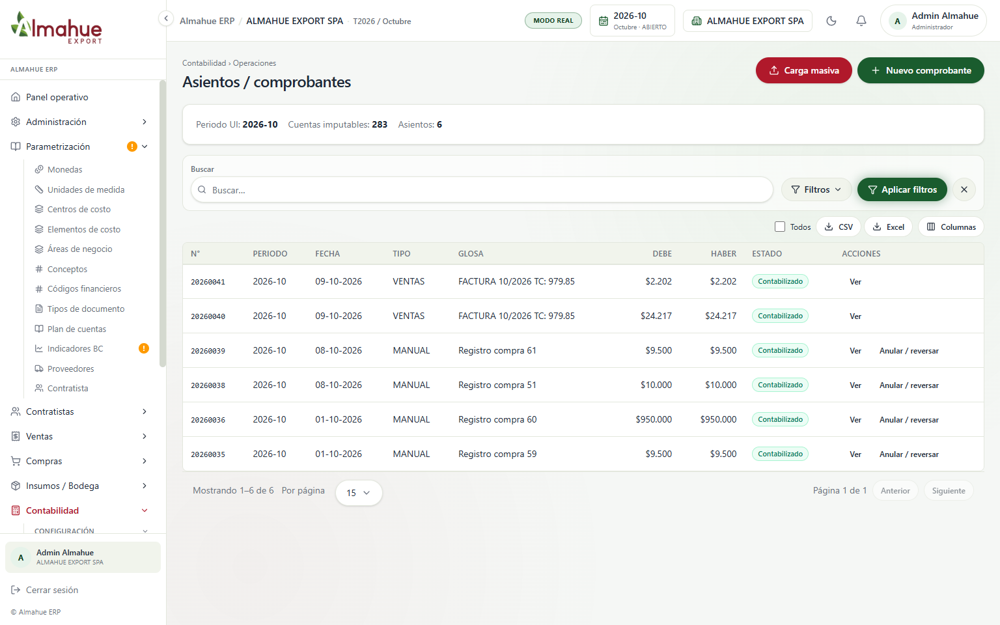
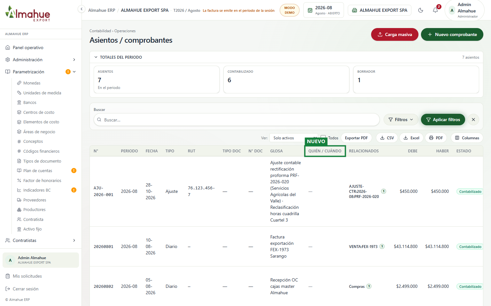
Columna Quién / cuándo (`creadoPor*`). Asiento CONTABILIZADO sigue inmutable en montos/cuentas. En la captura se marcó Todos para ver filas; no se editó ni contabilizó.
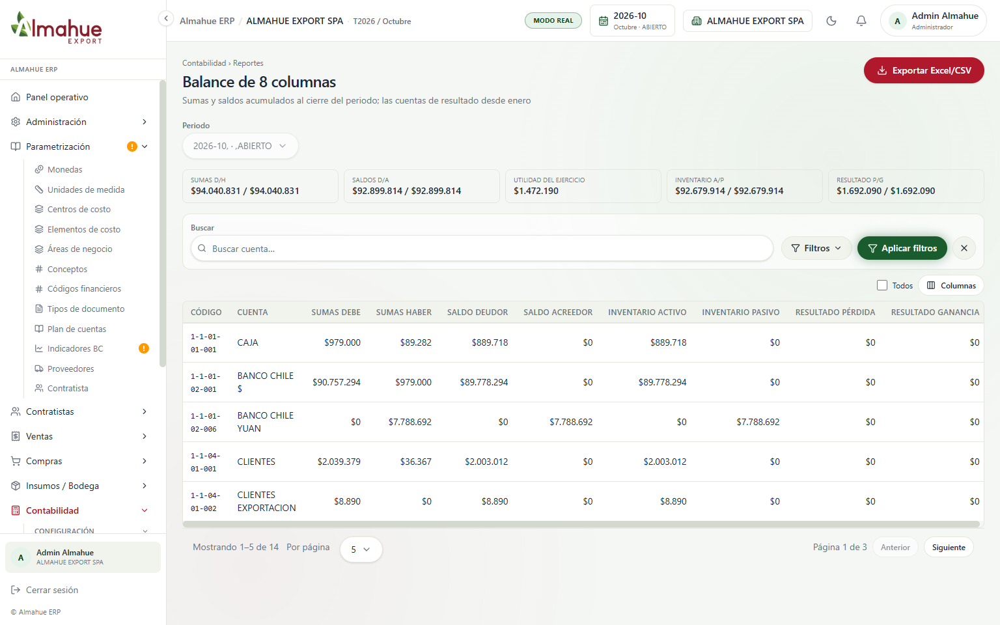
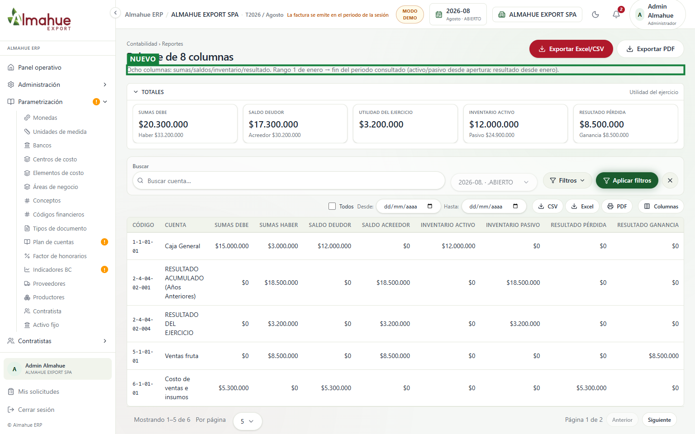
El subtítulo deja explícito el rango 1 de enero > fin del periodo consultado. Solo lectura; no se exportó.
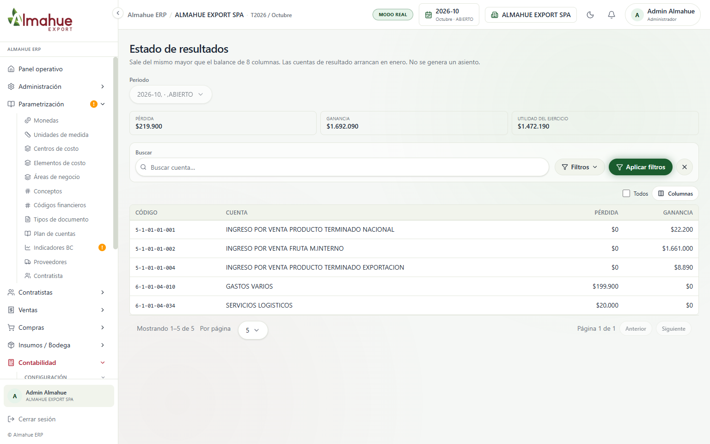
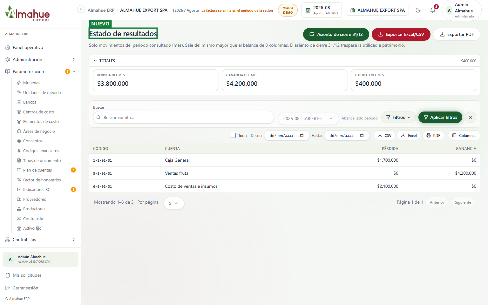
ER queda solo del periodo (sin toggle acumulado). No se cambió periodo ni se exportó.
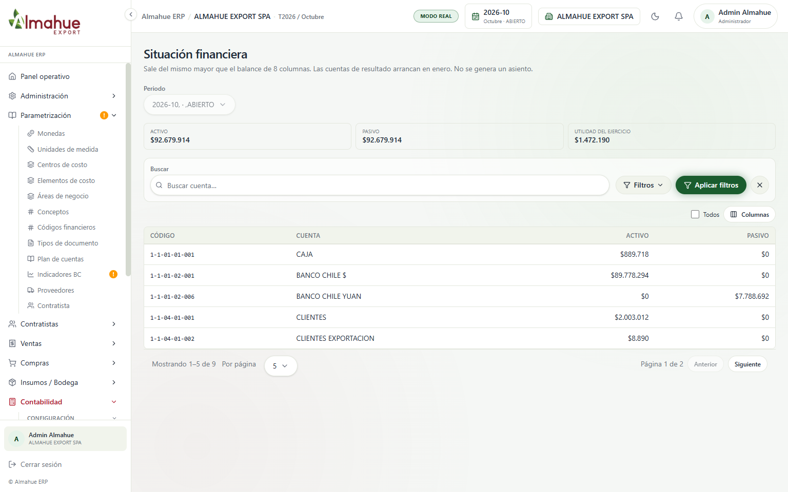
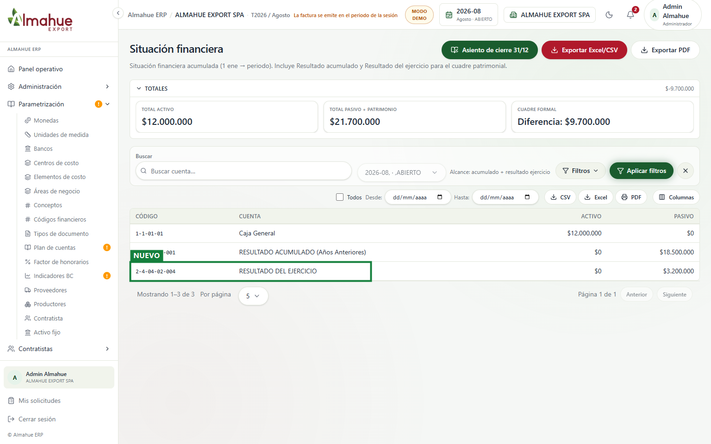
ESF mantiene acumulado + resultado del ejercicio (complemento del ER mensual). Solo lectura.
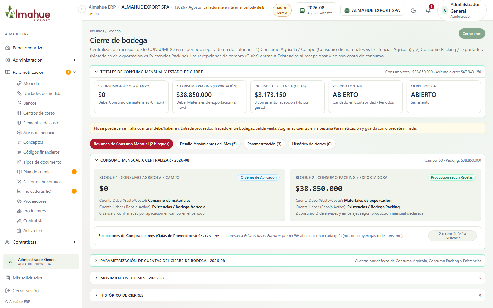
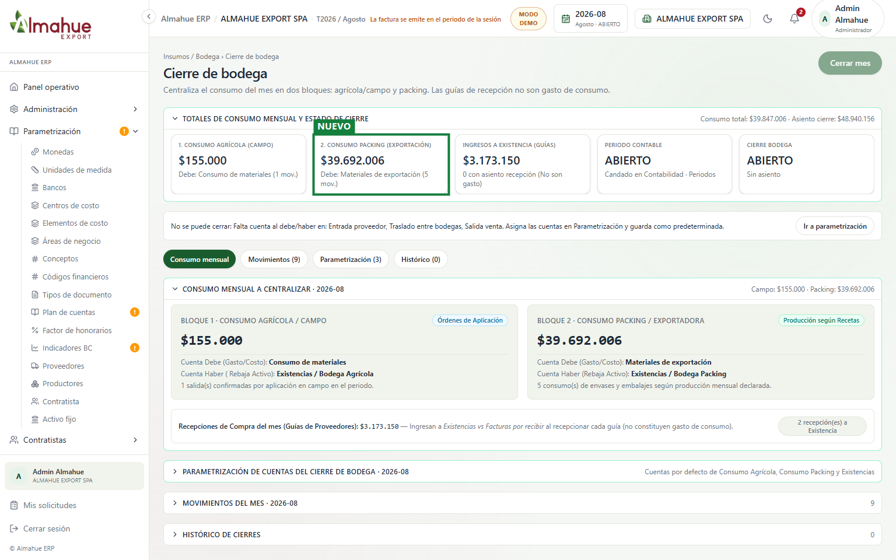
El bloque packing toma movimientos CONSUMO_PACKING (o fallback API). No se cerró el mes ni se guardaron cuentas.
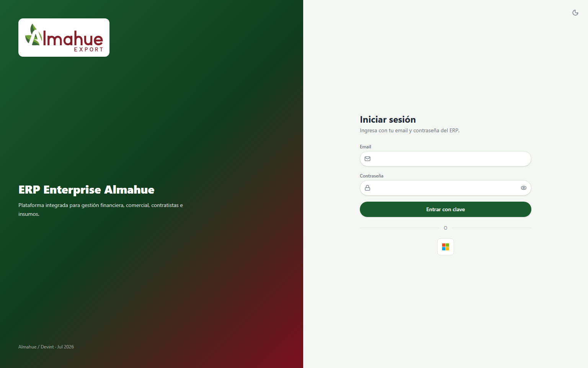
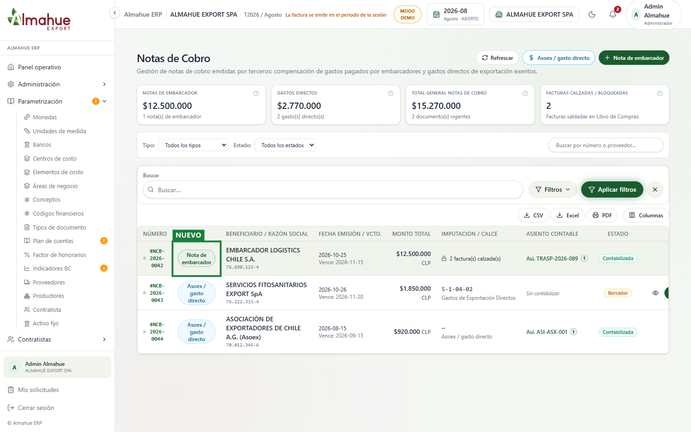
Sin Excel masiva; selección 1 a 1 y tipos embarcador / Asoex / gasto directo. No se emitió ni anuló nota.